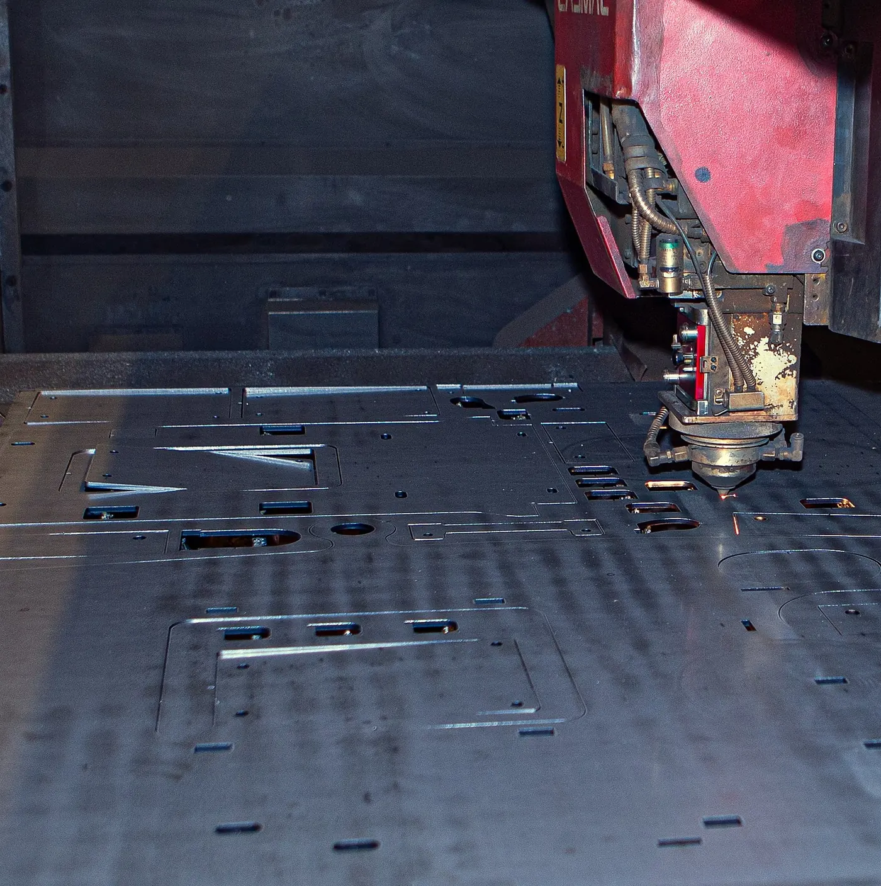
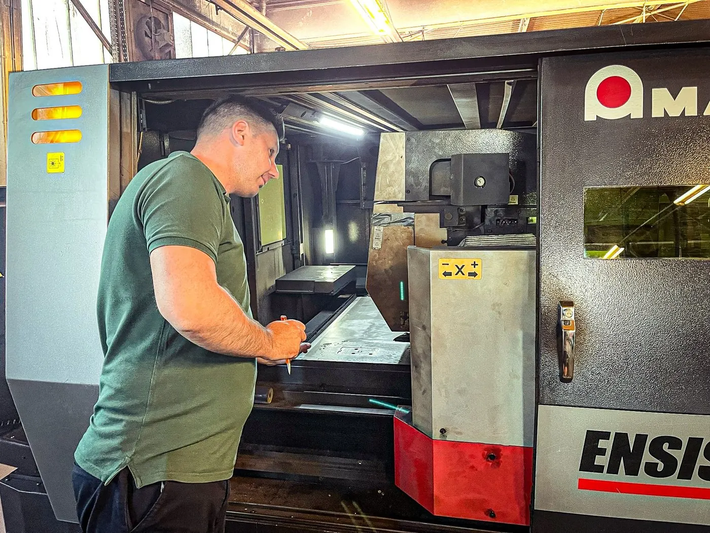
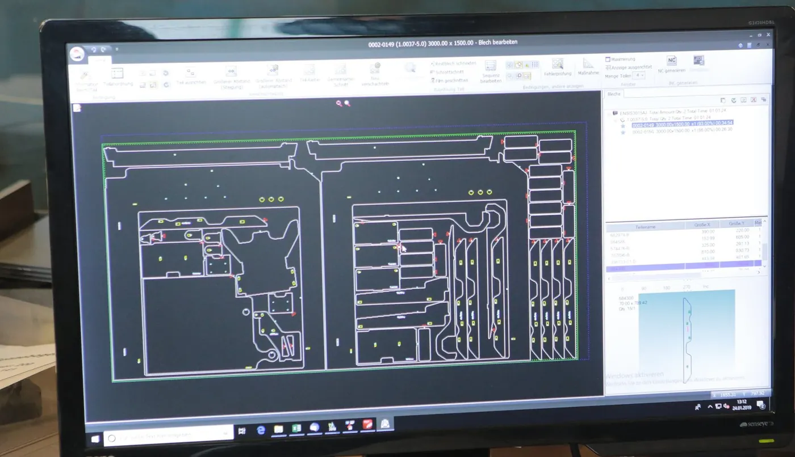

Dreifache Kapazität
Die neue Anlage schneidet dreimal so schnell wie die alte. Aus Wochen werden Tage, aus Tagen Stunden.
Wir schneiden Stahl, Edelstahl und Aluminium aus dem Tafelformat. Vom Einzelteil bis zur Serie, mit Schnittkanten, an denen niemand mehr nacharbeiten muss.
Das Herzstück der Halle ist eine Trumpf TruLaser 5030 mit 12 Kilowatt. Sie kam im vergangenen Jahr neu dazu und bringt die dreifache Schneidkapazität — genug für unseren eigenen Bedarf und Luft für Ihren Zuschnitt. Sie nimmt das volle Tafelformat und geht bei Stahl bis 30 Millimeter durch. Daneben läuft unsere Amada ENSIS im Mehrschichtbetrieb.

Der Kopf fährt die Kontur ab. Was er hinterlässt, ist die Kante, mit der das Teil weiterarbeitet — ohne Schleifen dazwischen.
Kontur

Die Tafel kommt mit dem Vakuumheber auf das Schneidbett. Was danach passiert, macht der Laser mit 12 Kilowatt.
Bis 30 mm schneiden wir, bis 20 mm kanten wir — und zwar in Stahl, Edelstahl und Aluminium gleichermaßen. Größere Teile teilen wir auf und fügen sie im Haus wieder zusammen.
Die neue Anlage schneidet dreimal so schnell wie die alte. Aus Wochen werden Tage, aus Tagen Stunden.
Eine Zeichnung, ein Teil. Wir schachteln es in die nächste passende Tafel, statt eine eigene aufzulegen.
Wiederkehrende Teile legen wir als Programm ab — der zweite Auftrag läuft schneller durch als der erste.
3000 × 1500 Millimeter am Stück, ohne Stoß und ohne Naht — und bis 30 Millimeter Stahl. Dort, wo andere absagen müssen, fängt unser Laser erst an.
Die Schnittqualität reicht, damit die Teile direkt in die Abkantpresse gehen. Geschliffen wird nur, wo es die Zeichnung verlangt.
DXF, STEP oder eine Skizze aus dem Konstruktionsbüro. Was fehlt, klären wir am Telefon, nicht per Formular.



Was Einkäufer und Konstrukteure uns zu Laserschneiden am häufigsten fragen — beantwortet von den Leuten, die die Maschine fahren.
Ihre Frage steht nicht dabei?
Anrufen: 08772 803707Seit der neuen Anlage schneiden wir dreimal so schnell wie vorher. Wann Ihr Teil fertig ist, sagen wir Ihnen beim Anruf — nicht erst nach der Bestellung.
Stahl bis 30 Millimeter. Edelstahl und Aluminium schneiden wir ebenfalls; die sinnvolle Grenze hängt vom Teil ab — rufen Sie an, dann sagen wir es Ihnen in zwei Minuten.
Das Tafelformat ist 3000 × 1500 Millimeter. Größere Teile teilen wir auf und fügen sie im Haus wieder zusammen.
Ja. Wir fertigen Prototypen, Einzelstücke und kleine Serien — genau dafür ist unser Betrieb aufgestellt.
DXF oder STEP sind uns am liebsten. Eine bemaßte Skizze reicht uns aber auch, dann zeichnen wir das Teil hier.
Bis 30 Millimeter Stahl schneiden wir am Stück. Schicken Sie die Zeichnung, wir sagen Ihnen, wie Ihr Teil auf die Tafel passt.
Oder direkt anrufen: 08772 803707